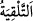
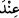

şudur: Halkından birisi kendisiyle konuştuğu zaman onların huzurunda ayakta durur ve
onlarla konuşur, oturarak onlarla konuşmaz. Şeriat bu hususta örfe uymuştur.
Ârifin edeblerinden birisi de namazında belli bir sûre veya âyet okumaya
niyetlenmemektir. Çünkü o, münâcâtı vasıtasıyla Rabbi’nin kendisini nereye alıp
götüreceğini bilmez. Şu halde ârifin Allah’ın kelâmından münâcâtta bulunduğu, Hakk’ın
da hâtırına ilka ettiği şeye uyması yeterlidir.
Kendisinden kalb huzûru meydana gelmeyen her namaz ölüdür, ruhsuzdur. Ruhsuz
olunca da kıyamet gününde sâhibinin elinden tutmaz.
Zekât ve sadaka da sâlih amellerdendir. Efdal olanı, ölüm anında değil, sıhhatli iken
verilendir. Eceli yaklaşan ve bir şeyler vermek isteyen kimse, emâneti sâhibine
verdiğini düşünmelidir ki böylece efdal olanı kaçırdıktan sonra tasaddukta bulunanlarla
değil de, emâneti yerine ulaştıran emin kimselerle birlikte haşrolunsun. Bu, sadaka
konusunda mânevî ticârette kâr elde etmenin bir yoludur.
İnfak etmek, toprağa ekilen tohum gibi malın artmasına, çoğalmasına ve çıkan
mahsûlün daha da artmasına sebep olur.
6. (Ey Muhammed!) Şüphesiz ki bu Kur’an, hikmet sâhibi ve her şeyi bilen Allah
tarafından sana verilmektedir.
“(Ey Muhammed!) Şüphesiz ki bu Kur’an, hikmet sâhibi ve her şeyi bilen Allah
tarafından sana” kâfirlerin iddiâ ettiği gibi kendinden ya da başkasının telkini ile
değil, Allah’ın vermesi ve telkini yoluyla Cebrâil vâsıtasıyla “verilmektedir.”
Tâcü’l-masâdır’da der ki: “
” Bir şeyi birisinin önüne getirmek demektir.”
“
” kelimesi “
” mânâsınadır. Ancak ondan daha beliğ ve özeldir.
İki ismin tenvinli olması tâzim içindir. Yâni “Hakîm tarafından, hem de ne Hakîm;
Alîm tarafından, hem de ne Alîm” mânâsınadır.
Bu iki ismin yüceltilmesi, Kur’ân’ın şanını yüceltmek, Kur’an’da bulunan yücelikleri
ve incelikleri bilme ve kuşatma konusunda Rasûlullah (s.a.)’in derecesini tâyin etmek
demektir. Çünkü hikmetleri ve ilimleri böyle Âlim ve Hakîm bir zâttan alan kimse, ilim
ve hikmetinin sağlamlığında alem olur.
et-Te’vîlâtü’n-Necmiyye’de der ki: “İşâret etmektedir ki sen bütün peygamberlerin
ulaşabileceği kemalin sınırını aştın, geçtin. Çünkü onlar kitapları kendi elleriyle
Cebrâil (a.s.)’ın elinden; mesajları da vahiy olarak onun lafzı ile alırlardı. Sen ise
Kur’ân’ı her ne kadar Cebrâil’in kalbine indirmesiyle almış olsan da, Kur’an’ın
hakikatları -ledün kelimesinin işâret ettiği gibi- Kur’an’ın hikmetini senin kalbine
tecellî ettiren Hakîm’in katından/tarafından sana verilmektedir ki bu O’nun zâtı ile kâim
bir sıfatıdır. Dolayısıya Allah sana Kur’ân’ın hakîkatlarını öğretti, hikmeti ile seni